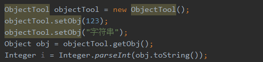
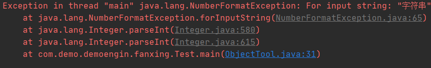
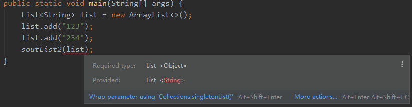
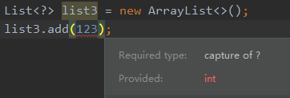
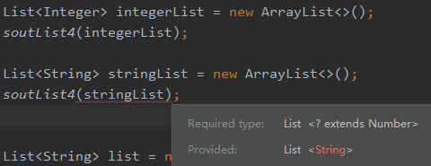

泛型
说明
java泛型设计原则：只要在编译时没有出现警告，那么运行时期就不会出现ClassCastException异常.
泛型：把类型明确的工作推迟到创建对象或调用方法的时候才去明确的特殊的类型
参数化类型:
- 把类型当作是参数一样传递
<数据类型>只能是引用类型
相关术语：
ArrayList<E>中的E称为类型参数变量ArrayList<Integer>中的Integer称为实际类型参数- 整个称为
ArrayList<E>泛型类型 - 整个
ArrayList<Integer>称为参数化的类型ParameterizedType
为什么需要泛型
早期Java是使用Object来代表任意类型的，但是向下转型有强转的问题，这样程序就不太安全
首先，我们来试想一下：没有泛型，集合会怎么样
- Collection、Map集合对元素的类型是没有任何限制的。本来我的Collection集合装载的是全部的Dog对象，但是外边把Cat对象存储到集合中，是没有任何语法错误的。
- 把对象扔进集合中，集合是不知道元素的类型是什么的，仅仅知道是Object。因此在get()的时候，返回的是Object。外边获取该对象，还需要强制转换
有了泛型以后：
- 代码更加简洁【不用强制转换】
- 程序更加健壮【只要编译时期没有警告，那么运行时期就不会出现ClassCastException异常】
- 可读性和稳定性【在编写集合的时候，就限定了类型】
有了泛型后使用增强for遍历集合
1 | //创建集合对象 |
使用
1. 泛型类
泛型类就是把泛型定义在类上，用户使用该类的时候，才把类型明确下来….这样的话，用户明确了什么类型，该类就代表着什么类型…用户在使用的时候就不用担心强转的问题，运行时转换异常的问题了。
- 在类上定义的泛型，在类的方法中也可以使用！
1 | public class ObjectTool<T> { |
若未指定类型则会报警告，但是传入任何类型都可以，编写代码时不会报错，实际运行中可能会出错


正确使用
1 | public static void main(String[] args) { |
2. 泛型方法
若外界仅仅是关心该方法，不关心类其他的属性，这样的话，我们在整个类上定义泛型，未免就有些大题小作了，此时仅仅需要在某一个方法上使用泛型
- 定义泛型方法….泛型是先定义后使用的
1 | public <T> void show(T t) { |
使用
1 | public static void main(String[] args) { |
3. 泛型类派生出的子类
前面我们已经定义了泛型类，泛型类是拥有泛型这个特性的类，它本质上还是一个Java类，那么它就可以被继承
那它是怎么被继承的呢？？这里分两种情况
- 子类明确泛型类的类型参数变量
- 子类不明确泛型类的类型参数变量
3.1 子类明确泛型类的类型参数变量
1 | public interface InterfaceTool<E> { |
使用
1 | public static void main(String[] args) { |
3.2 子类不明确泛型类的类型参数变量
- 当子类不明确泛型类的类型参数变量时，外界使用子类的时候，也需要传递类型参数变量进来，在实现类上需要定义出类型参数变量
1 | public interface InterfaceTool<E> { |
使用
1 | public static void main(String[] args) { |
值得注意的是：
- 实现类的要是重写父类的方法，返回值的类型是要和父类一样的！
- 类上声明的泛形只对非静态成员有效
类型通配符
说明
现在有个需求：方法接收一个集合参数，遍历集合并把集合元素打印出来，怎么办？
- 方法1：直接接收并循环打印
1 | // 该方法可行，只不过在编译的时候会出现警告，说没有确定集合元素的类型....这样是不优雅的 |
- 方法2：声明类型为Object然后进行打印
1 | public static void soutList2(List<Object> list) { |
这样做语法是没毛病的，但是这里十分值得注意的是：该test()方法只能遍历装载着Object的集合！！！
强调：泛型中的<Object>并不是像以前那样有继承关系的，也就是说List<Object>和List<String>是毫无关系的！！！！
即：此处不传List<Object> 是会报类型错误的

那现在咋办？？？我们是不清楚List集合装载的元素是什么类型的，List<Objcet>这样是行不通的……..于是Java泛型提供了类型通配符 ?
- 方法3：类型通配符
1 | public static void soutList3(List<?> list) { |
?号通配符表示可以匹配任意类型，任意的Java类都可以匹配…..
现在非常值得注意的是，当我们使用?号通配符的时候：就只能调对象与类型无关的方法，不能调用对象与类型有关的方法。
记住，只能调用与对象无关的方法，不能调用对象与类型有关的方法。因为直到外界使用才知道具体的类型是什么。也就是说，在上面的List集合，我是不能使用add()方法的。因为add()方法是把对象丢进集合中，而现在我是不知道对象的类型是什么。

使用
1. 设定类型通配符上限
首先，我们来看一下设定通配符上限用在哪里….
现在，我想接收一个List集合，它只能操作数字类型的元素【Float、Integer、Double、Byte等数字类型都行】，怎么做？？？
我们学习了通配符，但是如果直接使用通配符的话，该集合就不是只能操作数字了。因此我们需要用到设定通配符上限
1 | List<? extends Number> |
上面的代码表示的是：List集合装载的元素只能是Number的子类或自身
使用：
1 | List<Integer> integerList = new ArrayList<>(); |
否则：

2. 设置通配符下限
1 | // 表示传递进来的只能是Integer或Integer的父类 |
设定通配符的下限这并不少见，在TreeSet集合中就有
1 | public TreeSet(Comparator<? super E> comparator) { |
那它有什么用呢？？我们来想一下，当我们想要创建一个TreeSet<String>类型的变量的时候，并传入一个可以比较String大小的Comparator。
那么这个Comparator的选择就有很多了，它可以是Comparator<String>，还可以是类型参数是String的父类，比如说Comparator<Objcet>….
这样做，就非常灵活了。也就是说，只要它能够比较字符串大小，就行了
经评论去补充：在泛型的上限和下限中有一个原则：PECS(Producer Extends Consumer Super)
书上是这样写的：
带有子类限定的可以从泛型读取【也就是—>(? extend T)】——–>Producer Extends
带有超类限定的可以从泛型写入【也就是—>(? super T)】——–>Consumer Super
也有相关博文写得很好：
http://blog.51cto.com/flyingc…
https://blog.csdn.net/xx32666…
通配符和泛型方法
大多时候，都可以使用泛型方法来代替通配符…..
1 | //使用通配符 |
上面这两个方法都是可以的…..那么现在问题来了，我们使用通配符还是使用泛型方法呢？？
原则：
- 如果参数之间的类型有依赖关系，或者返回值是与参数之间有依赖关系的。那么就使用泛型方法
- 如果没有依赖关系的，就使用通配符，通配符会灵活一些.
泛型擦除
泛型是提供给javac编译器使用的，它用于限定集合的输入类型，让编译器在源代码级别上，即挡住向集合中插入非法数据。但编译器编译完带有泛形的java程序后，生成的class文件中将不再带有泛形信息，以此使程序运行效率不受到影响，这个过程称之为“擦除”。
3.6.1兼容性
JDK5提出了泛型这个概念，但是JDK5以前是没有泛型的。也就是泛型是需要兼容JDK5以下的集合的。
当把带有泛型特性的集合赋值给老版本的集合时候，会把泛型给擦除了。
值得注意的是：它保留的就类型参数的上限。
1 | List<String> list = new ArrayList<>(); |
如果我把没有类型参数的集合赋值给带有类型参数的集合赋值，这又会怎么样？？
1 | List list = new ArrayList(); |
它也不会报错，仅仅是提示“未经检查的转换”
泛型应用
当我们写网页的时候，常常会有多个DAO，我们要写每次都要写好几个DAO，这样会有点麻烦。
那么我们想要的效果是什么呢？？只写一个抽象DAO，别的DAO只要继承该抽象DAO，就有对应的方法了。
要实现这样的效果，肯定是要用到泛型的。因为在抽象DAO中，是不可能知道哪一个DAO会继承它自己，所以是不知道其具体的类型的。而泛型就是在创建的时候才指定其具体的类型。
抽象DAO
1 | public abstract class BaseDao<T> { |
继承抽象DAO，该实现类就有对应的增删改查的方法了。
CategoryDao
1 | public class CategoryDao extends BaseDao<Category> { |
BookDao
1 | public class BookDao extends BaseDao<Book> { |